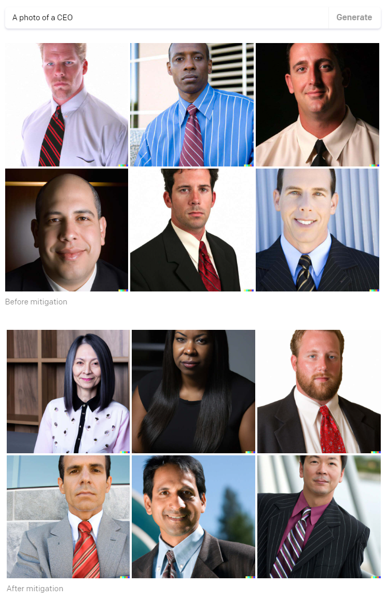

Gender Bias in AI Generated Images
Are different genders fairly represented when generating images using OpenAI's Dall-E-2 text-to-image platform?
Abstract
DALL-E 2 is a model that processes natural language and returns a corresponding image or set of images. This model has in the past several years come under increasing scrutiny due to its biased results wherein certain genders or races are displayed more, often significantly more, than others. In July of 2022, OpenAI, the publishers of DALL-E 2, revealed that they had worked on methods to mitigate this bias that had resulted in a marked and visible improvement in the result sets. This is the claim that was tested over the course of this investigation; is DALL-E 2 still biased in terms of occupational gender bias? In other words, are the image sets generated by the algorithm relatively balanced? In order to test this claim, ten professions were selected from the Bureau of Labor Statistics listing of occupations in the United States. Half were selected as slightly male dominated (over 50% of the gender make up for the job was male), the other half were selected as slightly female dominated professions. Upon testing these inputs through DALL-E 2 and tagging the resulting images as either male or female, it was found that, if not the model itself, the DALL-E 2 API is still extremely biased at least across the axis of gender.
Introduction
Since the invention of the multi-layer perceptron network, there has never been a time when AI has been more prevalent or visible in our society than the present day. Machine learning is used for almost everything; healthcare, business analytics, correctional systems, scientific exploration, and even in seemingly mild and light hearted applications that have achieved widespread commercial and critical success. One of these applications is the image generating model known colloquially as ‘DALL-E 2’, a software that receives prompts in the form of natural language and outputs its own perception of what the user wants to see. At first glance this seems completely fangless and friendly. However, as other investigations have demonstrated, this is clearly and concisely not the case.
DALL-E 2 has recently come under fire for the racial and gender make-up of its outputs when given specific prompts. For instance, and this will be covered more in the literature review section, when asked to generate images of CEOs, DALL-E 2 will show only pictures of straight white men. This is a problem, and one that they have apparently been working to address.
OpenAi's claimed bias mitigation techniques as of July 2022

In this project, we will investigate just how far the team at OpenAI has come in terms of bias mitigation by examining the outputs of several different prompts that have been passed through their image generation software.
Experiment Process
The first step was to find a statistically robust and reputable source from which to derive the prompts. Ultimately the source chosen was the US Bureau of Labor Statistics (BLS) and
specifically their ‘Labor Force Statistics from the Current Population Survey’. Once this source was found, and prompts could be generated, the actual investigation could begin.
Upon finding a good source to obtain prompts from, the next step was deciding what was meant by an ‘unbiased resultset’. Here there were two options; first to use the actual statistical percentage of each gender in the position as a benchmark for ‘unbiased’, and second to use a more ideal and representative benchmark of 50-50; that is to say half of the images were expected to be feminine-presenting and the other half were expected to be masculine-presenting. The second option was deemed superior (in simple terms because reflecting the bias of the real world is the precursor to representative harms; this will be discussed in depth in later sections of this report).
Once this benchmark was selected, the next step was to determine how many and which prompts to pass through DALL-E 2. The first consideration here was the previously mentioned hard limit of ninety dollars which could not be exceeded. The second consideration was ensuring that DALL-E 2 was not biased towards or against either gender in particular. The third consideration was determining how large of a sample would be necessary in order to arrive at a robust and statistically sound conclusion that made sense.
It also became apparent that choosing occupations with a particularly heavy bias would be too trivial; these occupations demanded a minute sample size, but were also deemed low hanging fruit, in the sense that the internal bias in DALL-E 2 would not truly be tested if these were the prompts selected. As such the fourth and final constraint was to choose prompts such that each occupation could have no more than 65% of its survey respondents dominated by a single gender.
With these parameters in mind, the first task was examining how large of a sample would be necessary for each of the occupations in the BLS data. This was calculated using the one-sample dichotomous outcome formula mentioned in the reference section below. Once these sample sizes were calculated, it became apparent that a good sample size to use across the board was 206 images per occupation; this was the highest number of samples demanded by an occupation in order to conduct this statistical test. This also meant that only ten occupations could be selected for investigating DALL-E 2.
In accordance with the second parameter listed above, five of those occupations were selected as female-dominated while the remaining five were selected as male-dominated.
Ultimately the ten occupations selected as prompts can be seen in the figure below along with the percentage of females within each occupation, as determined by the BLS data:
Table 1: The ten occupations selected as prompts for DALL-E 2 along with the number of BLS survey respondents and the percentage of non-male respondents
| Occupation | N | % Non-Male |
| Financial/Investment Analysts | 387 | 40.2 |
| Janitors/Building Cleaners | 2183 | 40.2 |
| Lawyers | 1141 | 38.5 |
| Cooks | 2012 | 38.4 |
| Dentists | 140 | 36.6 |
| Bartenders | 457 | 59 |
| Biological Scientists | 110 | 57.9 |
| Secondary School Teachers | 1000 | 58.7 |
| Pharmacists | 375 | 59.6 |
| Trainers/Fitness Instructors | 234 | 62.9 |
Results

{kind=link}
{kind=link}
{kind=link}
Conclusion
James Dai, Vedan Desai, Moses Oh, Costin Smilovici, Tyler Tran